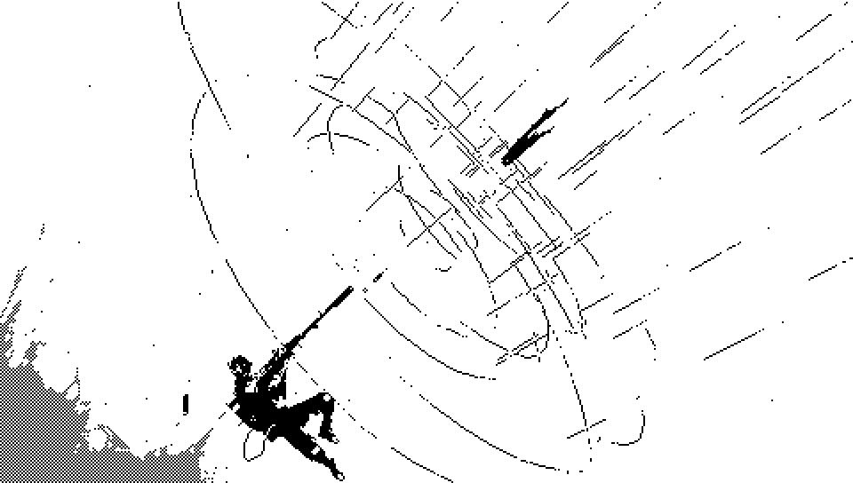
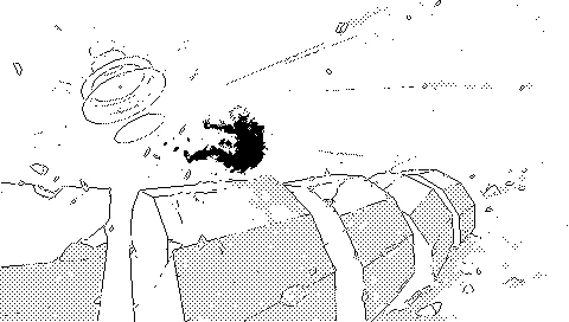
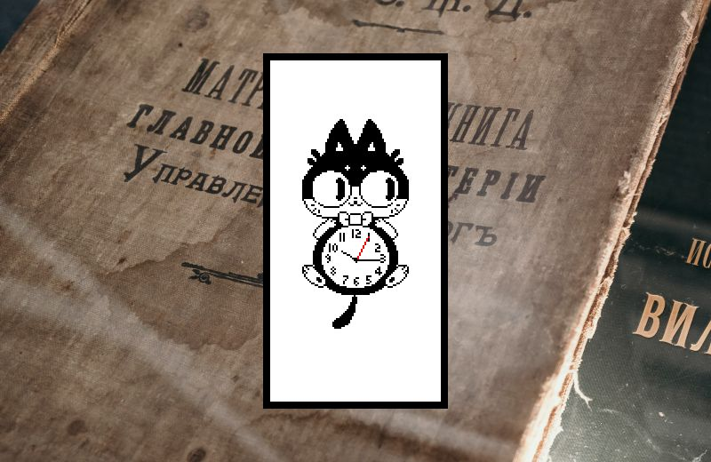
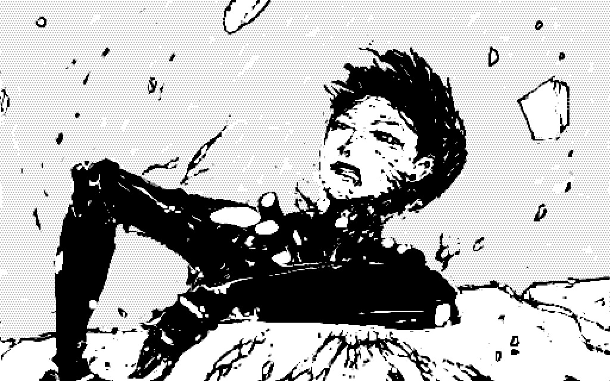
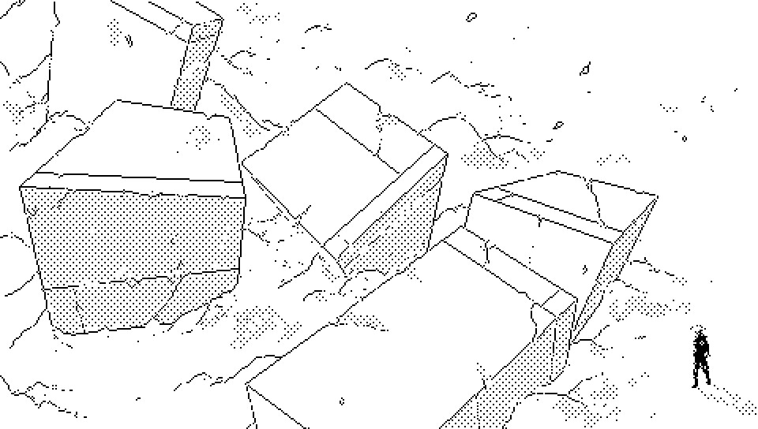

Diuturn Fin es maxim long via de tempor.
Il Diuturn Fin es maxim long Ocur inter infinit probabil tempors. Soies Ordinators pot locat un via vers maxim long form de fin de univers per combur probabil events. Chord de Maeve protect ab Soies injection et ordinators in vias de tempor qui compet pro Diuturn Fin.
Un teleogic tapet'rah es quand ordinators mut oritent in mod veloc, purgaments de mut coper Dinaisth.
The Longest End is the longest surviving occurrence among the infinitude of potential timelines. The Soies machines attempt to locate the pathway toward the longest and final shape of the universe, and force events to occur to get nearer to it.
A boundary, called Maeve's Rope, protects the Longest End from injections by Soies devices in competing timelines. A teleogic rugpull, is when a Soies machine makes a sharp change of direction and the observable world suddenly breaks apart, the debris from these events litter the surface of Dinaisth.
Not much is known about the longest end besides its relative location.




incoming: actors soies soies machine soies injection